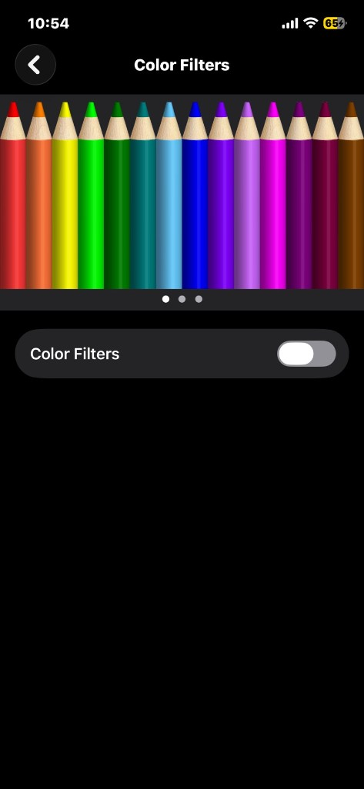
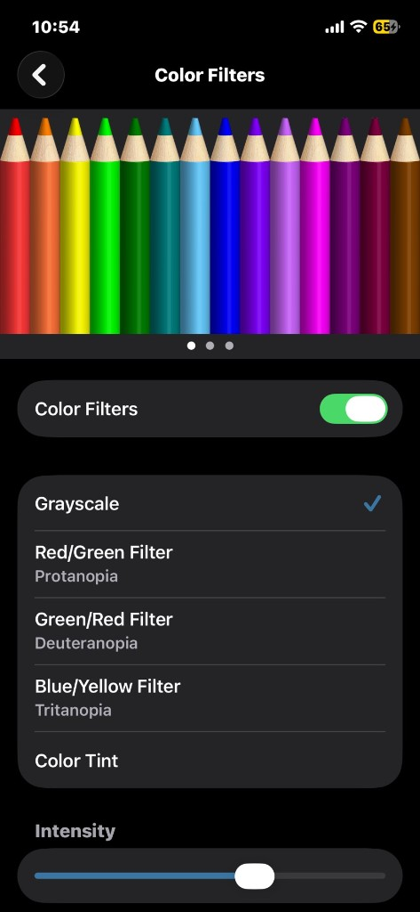
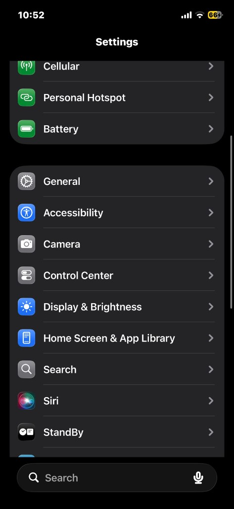
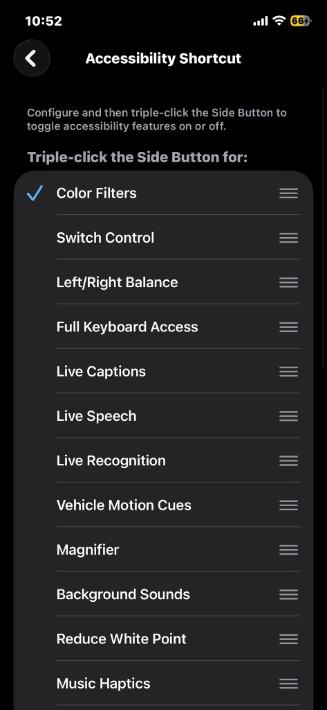
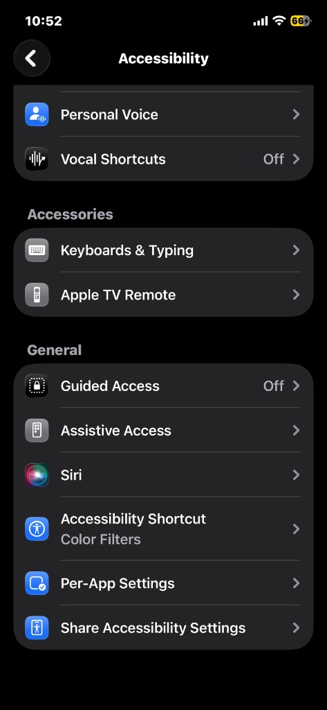
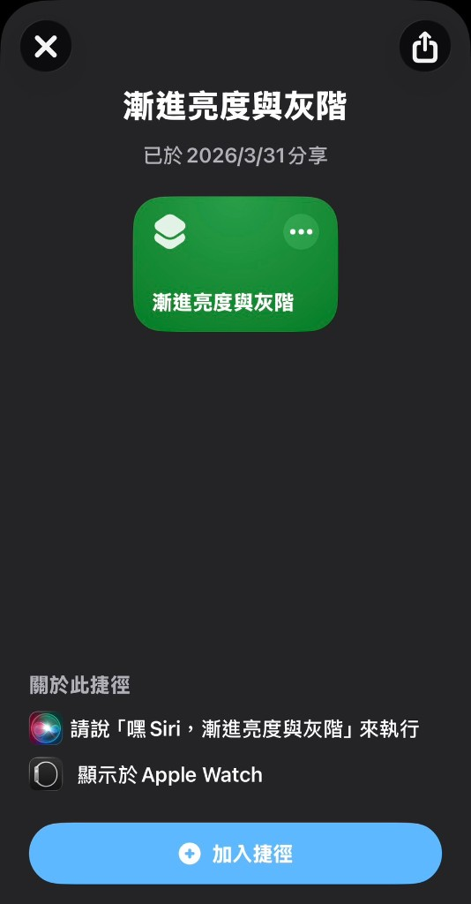
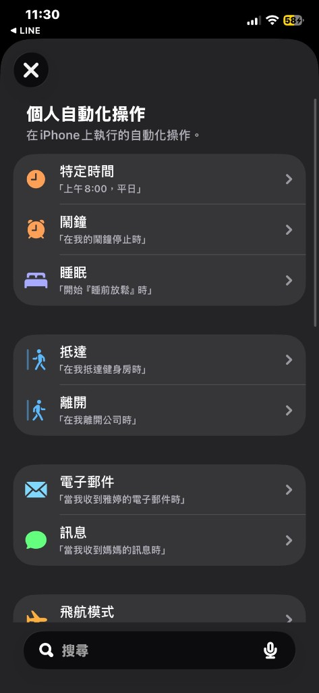
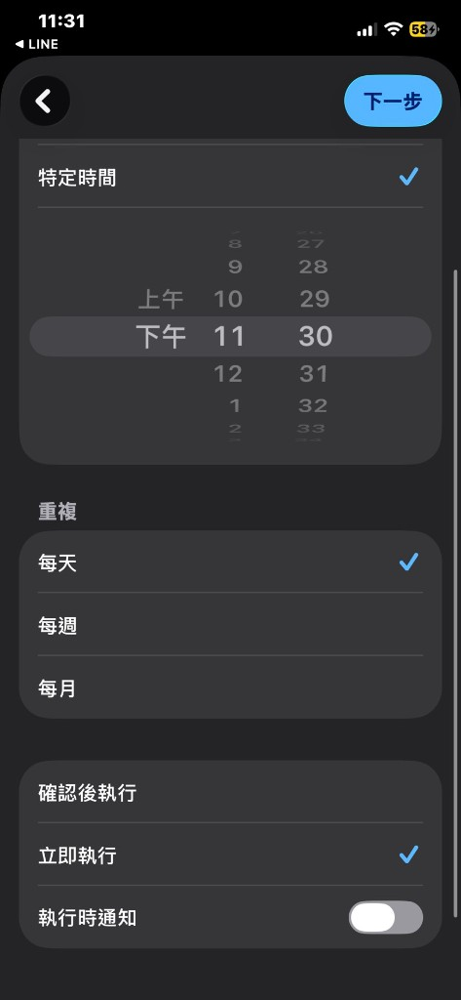
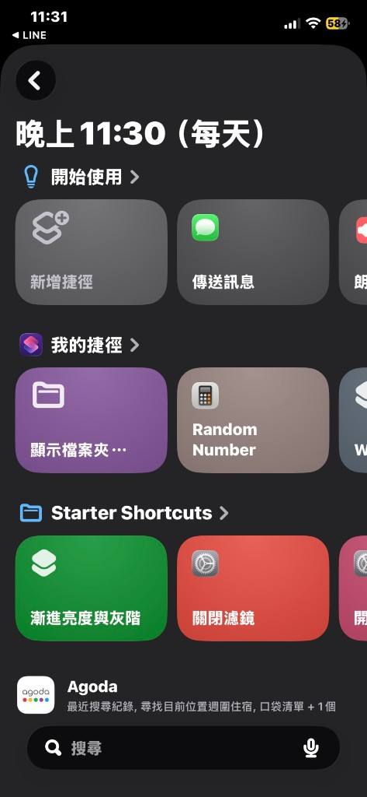
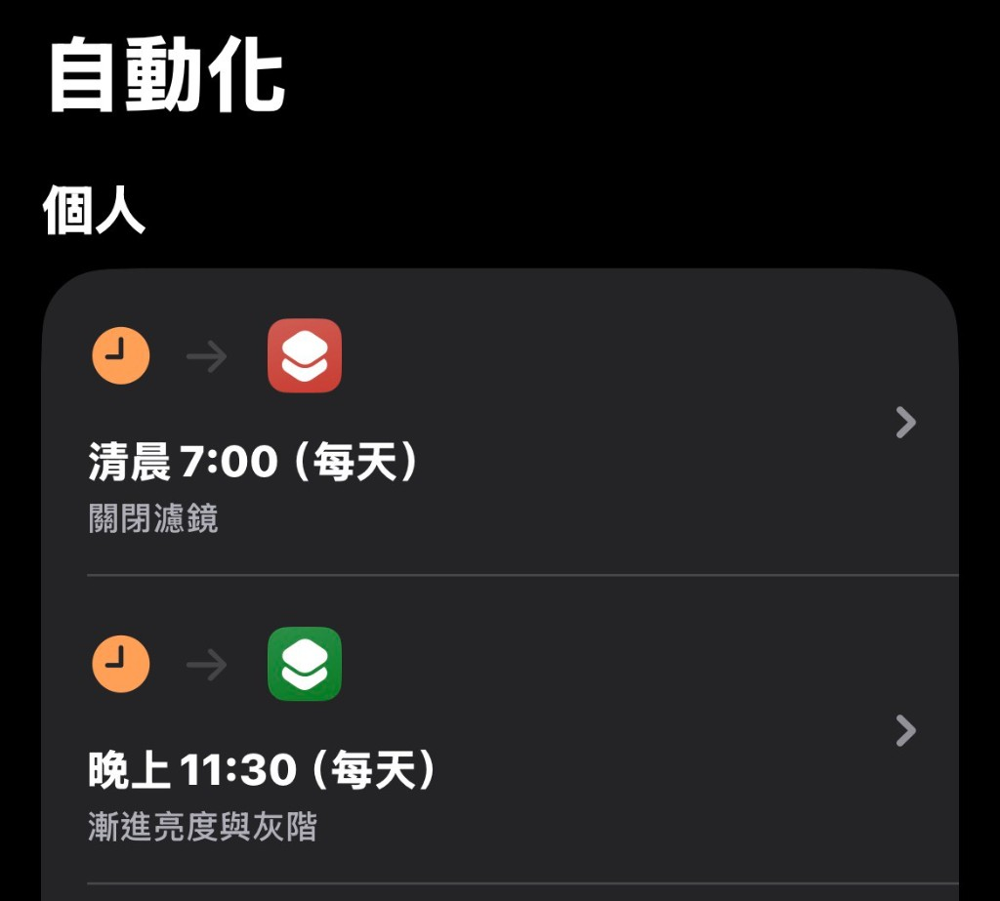

Gradual Dim & Grayscale · iOS Shortcut
漸進亮度與灰階 · iOS 捷徑
不是強迫，是引導。
讓螢幕自然暗下來，讓你自然想放下手機。
Not a restriction — a gentle nudge.
Let your screen fade, and let yourself drift to sleep.
▾ 向下捲動 ▾ Scroll Down
功能介紹
What It Does
A sleep aid built into your iPhone
內建在 iPhone 裡的助眠工具
每隔一段時間自動調低一格亮度，讓眼睛慢慢適應，不會突然感覺螢幕消失。 Brightness dims step by step over time, so your eyes adapt gradually without a jarring blackout.
灰階讓 Instagram、YouTube 變得沒那麼吸引人，多巴胺刺激大幅降低，你自然不想繼續滑。 Grayscale strips the color that makes Instagram and YouTube so addictive. Without the dopamine hit, you naturally stop scrolling.
設定一次就完成，每晚 11:30 自動啟動，清晨 7:00 自動關閉，完全不需要記。 Set it once. Every night at 11:30 PM it starts; at 7:00 AM it resets. Zero effort every day.
不鎖定任何 App，不強制你放下手機。只是讓環境變得「想睡覺」，決定權還在你手上。 No app locks. No forced restrictions. The environment just becomes… sleepier. You're always in control.
真正好的習慣，不是靠意志力撐住，
而是讓環境幫你自然而然地走向它。
Real habits aren't built on willpower.
They're built into the environment around you.
Real habits aren't built on willpower.
They're built into the environment around you.
真正好的習慣，不是靠意志力撐住，
而是讓環境幫你自然而然地走向它。
Enable Color Filters in Accessibility Settings
在輔助使用設定中開啟顏色濾鏡
捷徑要能控制灰階，你需要先在 設定 → 輔助使用 裡完成一次前置設定，讓 iPhone 知道可以用「顏色濾鏡」這個功能。只需要做一次，往後全自動。 For the shortcut to control grayscale, you need to enable Color Filters in Settings → Accessibility once. After that, everything runs automatically.
進入路徑
How to get there

顏色濾鏡（關閉） Color Filters (off)

開啟 → 選灰階 Enable → Grayscale
設定完後，記得把顏色濾鏡關掉，讓畫面調回彩色就可以了。你可以把彩度調到自己喜歡的程度再關閉，因為我們之後會讓自動化幫你在晚上自動開啟灰階，不用一直維持著。 Once configured, turn Color Filters back off and restore your screen to full color. You can adjust the intensity to your liking before closing — the automation we set up later will enable grayscale automatically each night, so you don't need to keep it on.
📱 同場加映・超重要前置工作 Bonus · Critical One-Time Setup
Set up triple-click side button shortcut
設定三連按側邊按鈕快速切換
完成後，你可以快速連按三下側邊按鈕來手動開關灰階，不需要進入設定。這在你睡前手動啟動、或早上想快速關掉時超好用。
路徑：設定 → 輔助使用 → 輔助使用捷徑，然後勾選「顏色濾鏡」。
Once configured, you can triple-click the side button to instantly toggle grayscale on or off — no need to open Settings. Perfect for a quick manual override before bed or in the morning.
Path: Settings → Accessibility → Accessibility Shortcut, then check "Color Filters".



設定完成後，連按三下 iPhone 側邊按鈕就能即時切換灰階模式。睡前手動開、早上手動關，完全掌控在你手上。 Once set up, triple-click the iPhone side button to instantly toggle grayscale. Turn it on before bed, off in the morning — always in your hands.
安裝指引
Installation Guide
Set up in five steps · iPhone only
只需五個步驟 · 僅支援 iPhone
在「Starter Shortcuts」區塊找到「漸進亮度與灰階」，或透過搜尋找到它。點進去查看詳細內容。 In the Shortcuts App, find "漸進亮度與灰階" under Starter Shortcuts, or use search. Tap to open the shortcut details.

在捷徑詳細頁面，點擊底部藍色的「加入捷徑」按鈕，將它加入你的捷徑庫。 On the shortcut detail page, tap the blue "Add Shortcut" button at the bottom to add it to your library.

在捷徑 App 底部切換到「自動化」頁籤，確認有看到兩個排程：晚上 11:30（啟動）與清晨 7:00（關閉）。 Switch to the "Automation" tab at the bottom of Shortcuts. You should see two schedules: 11:30 PM (activate) and 7:00 AM (deactivate).

點入晚上 11:30 的自動化，確認時間設為每天重複，並將執行模式設為「立即執行」，這樣就不需要每次手動確認。 Tap the 11:30 PM automation. Make sure it repeats daily and set execution to "Run Immediately" so you don't need to confirm each time.

設定完成後，每晚 11:30 你的 iPhone 會自動開啟灰階模式並漸漸降低亮度，早上 7:00 自動恢復正常。你只需要放下手機，閉上眼睛。 Once set up, every night at 11:30 PM your iPhone will automatically enable grayscale and gradually dim the screen. At 7:00 AM it resets. Just close your eyes.

🌙 全部完成，晚安。 🌙 All done. Sleep well.
設定只需一次，效果每晚都在。 Set up once. Enjoy every night.
立即加入捷徑（iPhone） Add Shortcut Now (iPhone)